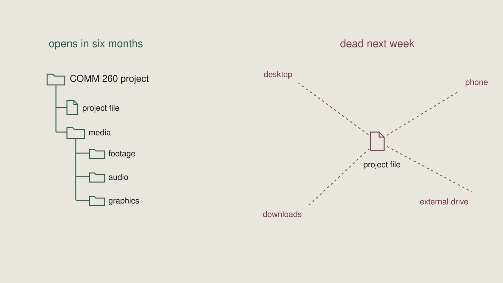
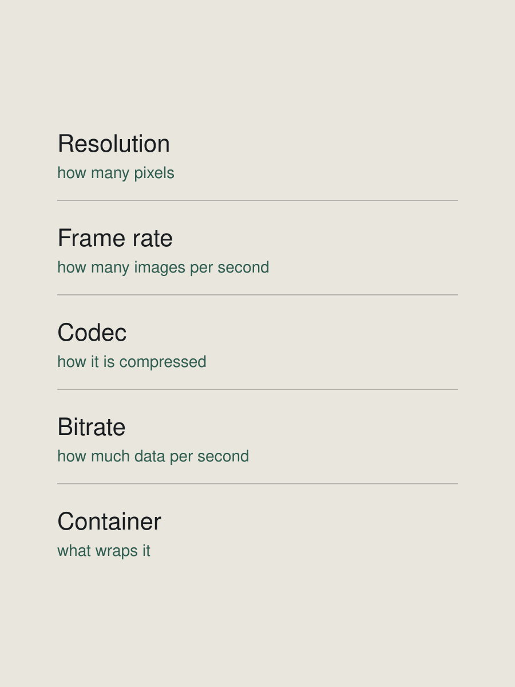

Week 9Non-linear editing
- LessonWeek 9 · Non-linear editing — Lesson
- Slides18 slides from class
- LabWeek 9 Lab — Edit the footage from week 8
- AssignmentWeek 9 Assignment — 60-second piece and project file
Diagrams
From the lesson. Yours to keep — print them, mark them up.


Review before class2.75 h
Material is provided in class. This is on top of the lesson, the lab and the assignment.
Read, watch and listen against what we are doing in class that week. The material is chosen to sit beside the week's topic, and it is worth nothing to you if you meet it as something separate.
Take notes. Draw diagrams. Not a summary — a record of what you noticed and what you think it is doing.
The test is whether you can explain it in your own words, using the language of the module and the rest of the course. Not repeat it back. Not report that you liked it.
If you cannot say what a piece is doing in course vocabulary, you have not finished with it yet. That is the same demand every assignment in this course makes, practised on work nobody is grading.
Terms are in the Glossary, by module.